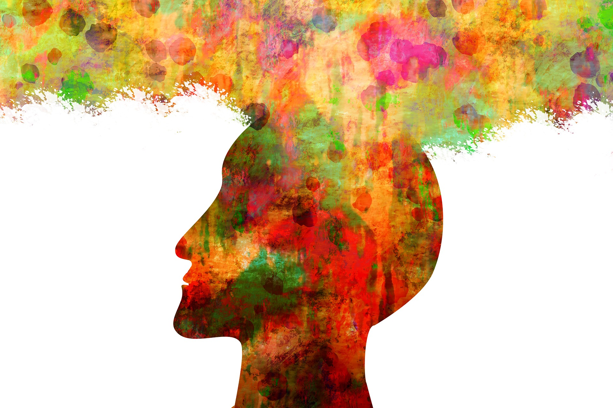
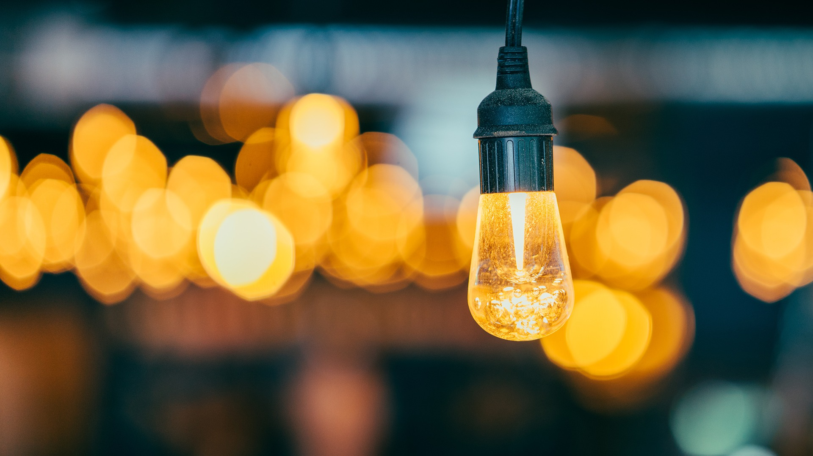

5
Reasons to Read
1. Stop Stress

The first reason: reading can reduce stress and can be a calming and relaxing experience.
2. Brain Workout

You might think this is obvious if you're reading confusing articles about scientific studies, but this is even true if you're just reading for fun! Reading can act as a workout for your brain. When reading, readers have to recall characters, follow the plot, and comprhend what is happening in the story. Every time you read a book, you're exercising your brain to improve your memory.
3. New Knowledge

Reading can help you better understand any subject you are willing to learn about, and along the way, gives you a wider range of vocabulary. Furthermore, not only does reading increase your vocabulary, it also enhances your creativity and imagination! Not kidding! Creativity is useful for thinking of solutions to problems, and leads to success.
4. Enhance Empathy

When you read, you likely feel like you live in the story, by walking in the character's shoes. Reading lets you take on new perspectives, and can make you open-minded to new ideas. It is also proven to be true that reading can increase how empathetic you are! Empathy is a great trait to have.
5. Healthy is Here

Did you know reading burns calories? In fact, reading burns 50% more calories than watching TV for the same length of time. A study conducted by students in Yale even showed that reading habits affect your longevity! People who read lived on average 23 months longer than those who didn't. Next time, instead of watching TV, pick up a book.
Summary

In short, books are healthy, great for your brain, good for YOU, as a person.
The End... Or Not the End